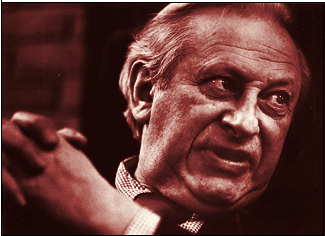

This is an archived copy of History Matters, provided by the Roy Rosenzweig Center for History and New Media. To explore this content in a new interface, visit Who Built America?.

Studs Terkel: Conversations with America
http://www.studsterkel.org/
Chicago Historical Society in conjunction with the National Gallery of the Spoken Word.
Reviewed Sept. 1–12, 2004.
No individual has popularized oral history more than Studs Terkel, author of such best-selling books as Hard Times (1970), Working (1974), and “The Good War” (1984). Yet until recently, except in his original radio broadcasts at Chicago’s WFMT, Terkel’s interviews have never been accessible. With the launching of Studs Terkel: Conversations with America, that situation has changed.
The site, launched in 2002, is a collaboration between the Chicago Historical Society (CHS), the repository for Terkel’s recordings and a leader in developing online exhibitions, and the National Gallery of the Spoken Word, an initiative of Michigan State University’s MATRIX project, which is developing an online digital library of twentieth-century American spoken word collections (http://www.historicalvoices.org). The well-organized site includes an introduction, a biographical sketch, galleries containing interviews from Terkel’s radio programs and books, an interview with Terkel, and an education section, plus a description of the CHS and a brief account of Terkel’s ninetieth birthday party.

The biographical sketch is linked to five audio selections of Terkel reading from his memoir Talking to Myself (1977). One can hear Terkel recall the rooming house his family ran, Chicago’s Bughouse Square, and his early interviewing days. His curiosity, warmth, humor, empathy, and point of view literally come across loud and clear.
The galleries are the core of the site. The first contains excerpts from Terkel’s radio program, arranged into topical subgalleries featuring over three hundred interview excerpts, generally about fifteen minutes long, on architecture, teens, nuclear war, and Chicago (a subgallery on folk music contained no entries). Other galleries feature interviews done for five of Terkel’s books. It is fascinating actually to hear Terkel interview both well-known and relatively anonymous individuals, and one appreciates his skill as an interviewer. The last gallery contains a sampling of Terkel’s self-selected “Greatest Hits,” including a program on a train with riders bound for the 1963 March on Washington.
The fifty-five-minute multimedia interview of Terkel, divided into six topical parts, enables one to see as well as hear the colorful Terkel. The education section contains oral history interview guidelines and well-conceived lesson plans about oral history and using the recordings in the classroom.
The interview excerpts are searchable by keywords, title, gallery, date, interviewee, and interview summary. While this search facility seems to be fairly extensive, it also contains problematic elements. There are usually only a few keywords listed under each interview. Moreover, the keywords often are idiosyncratic or convey only a fraction of the interview content. Searches consequently offer only a limited guide to the site. A list of the keywords used would be helpful. Similarly, a list of all the interviewees featured (who represent only a fraction of the five thousand Terkel recordings at the CHS—such well-known Terkel associates as Mahalia Jackson are not on the site) would assist in effective usage.
Notices appear throughout the site that more material will be added, but there is little indication that this has occurred. Nevertheless, Studs Terkel: Conversations with America offers a valuable introduction to the life, times, and work of this leading chronicler of the twentieth-century United States.
Clifford M. Kuhn
Georgia State University
Atlanta, Georgia